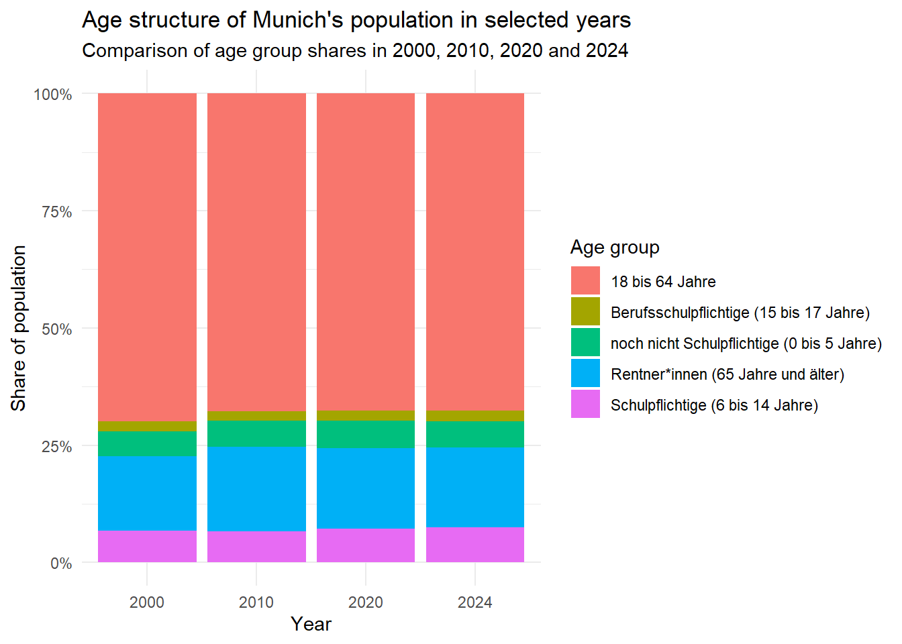
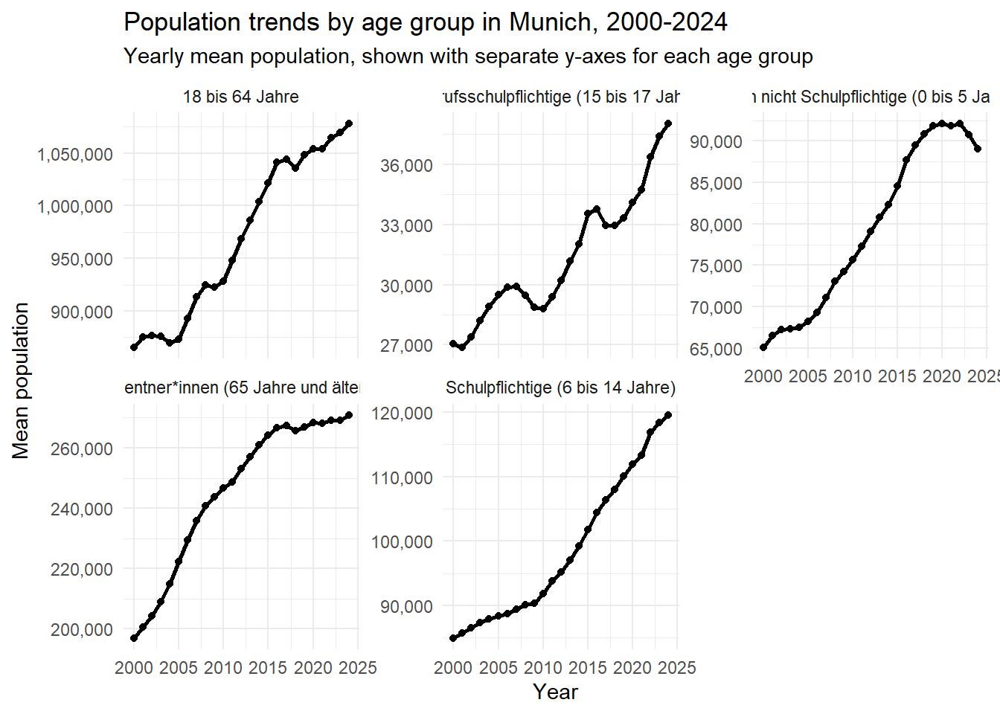

library(tidyverse)
library(lubridate)
library(scales)
library(knitr)StatProg II - Project Proposal
1 Dataset and Research Questions
1.1 Dataset Description
This project uses the dataset Monatszahlen Bevoelkerung from the Open Data Portal of the City of Munich. The dataset is provided by the Statistical Office of Munich and contains monthly population-related indicators. The full dataset covers several demographic topics, including gender and nationality, age groups, EU and non-EU nationalities, continents, births, deaths, migration, household structures and other population-related categories.
The dataset is available as a CSV file and is published under the licence Datenlizenz Deutschland Namensnennung 2.0. For this project, we focus only on the topic Altersgruppen, because the research interest is the development of Munich’s age structure.
The raw dataset is organised in long format. Each row represents one observation for a specific demographic category, year and month. The most relevant variables are:
| Variable | Description |
|---|---|
MONATSZAHL |
Main demographic topic, for example Altersgruppen |
AUSPRAEGUNG |
Subcategory within the topic, for example a specific age group |
JAHR |
Year of the observation |
MONAT |
Month of the observation, usually in YYYYMM format |
WERT |
Population value for the respective category and month |
VORJAHRESWERT |
Value in the same month of the previous year |
VERAEND_VORMONAT_PROZENT |
Percentage change compared with the previous month |
VERAEND_VORJAHRESMONAT_PROZENT |
Percentage change compared with the same month of the previous year |
ZWOELF_MONATE_MITTELWERT |
Twelve-month moving average |
age_data <- read_csv("data/processed/age_data.csv")
age_structure_long <- read_csv("data/processed/age_structure_long.csv")
age_structure_share <- read_csv("data/processed/age_structure_share.csv")
age_change_table <- read_csv("data/processed/age_change_table.csv")
glimpse(age_data)Rows: 2,808
Columns: 13
$ `_id` <dbl> 1, 2, 3, 4, 5, 6, 7, 8, 9, 10, 11, 12, …
$ MONATSZAHL <chr> "Altersgruppen", "Altersgruppen", "Alte…
$ AUSPRAEGUNG <chr> "Berufsschulpflichtige (15 bis 17 Jahre…
$ JAHR <dbl> 2025, 2025, 2025, 2025, 2025, 2025, 202…
$ MONAT <dbl> 202501, 202502, 202503, 202504, 202505,…
$ WERT <dbl> 38315, 38335, 38395, 38391, 38337, 3829…
$ VORJAHRESWERT <dbl> 37808, 37865, 37853, 37910, 37830, 3781…
$ VERAEND_VORMONAT_PROZENT <dbl> -0.16, 0.05, 0.16, -0.01, -0.14, -0.11,…
$ VERAEND_VORJAHRESMONAT_PROZENT <dbl> 1.34, 1.24, 1.43, 1.27, 1.34, 1.25, 0.8…
$ ZWOELF_MONATE_MITTELWERT <dbl> 38080, 38120, 38165, 38205, 38247, 3828…
$ date <date> 2025-01-01, 2025-02-01, 2025-03-01, 20…
$ month <dbl> 1, 2, 3, 4, 5, 6, 7, 8, 9, 10, 11, 12, …
$ year <dbl> 2025, 2025, 2025, 2025, 2025, 2025, 202…The age-group data contain monthly observations from 2000 to 2025. However, the main analysis is restricted to the complete years from 2000 to 2024. The year 2025 is excluded from the main analysis because the available observations for 2025 are incomplete.
For the analysis, we construct five non-overlapping age groups:
- 0-5 years
- 6-14 years
- 15-17 years
- 18-64 years
- 65 years and older
The original dataset provides the working-age population as Erwerbsfaehige (15 bis 64 Jahre). Since this category overlaps with Berufsschulpflichtige (15 bis 17 Jahre), the 18-64 group is derived by subtracting the 15-17 group from the original 15-64 group. This transformation avoids double-counting and allows the project to analyse a consistent age structure.
1.2 Research Questions
This project investigates changes in the age structure of Munich’s population between 2000 and 2024. The analysis focuses on age-group-specific population trends and asks whether the available data provide preliminary evidence of demographic ageing in Munich.
The main research question is:
How has the age structure of Munich’s population changed between 2000 and 2024?
This main question is addressed through two sub-questions:
Which age groups have experienced the strongest population growth or decline over time?
Is there preliminary evidence of demographic ageing in Munich?
The first sub-question focuses on absolute and relative population changes across age groups. The second sub-question is treated cautiously: an increase in the 65+ group may indicate demographic ageing, but this needs to be assessed together with the development of younger age groups and the relative age-group shares.
1.3 Context and Target Audience
Munich has experienced strong population growth over the past decades. Changes in the city’s age structure are relevant for several areas of urban planning, including childcare, schools, housing, public transport, healthcare and services for older residents.
The target audience of this analysis includes local policymakers, urban planners, researchers and citizens interested in demographic change in Munich. The project is mainly descriptive and exploratory: it does not aim to explain the causes of population change, but to describe how different age groups developed over time and whether the data show preliminary signs of demographic ageing.
2 Initial Data Analysis
2.1 Data Structure
The initial data analysis uses the cleaned age-group dataset. The dataset contains monthly observations for different age groups from 2000 to 2025. Since 2025 is incomplete, the main analysis focuses on the complete years 2000-2024.
glimpse(age_data)Rows: 2,808
Columns: 13
$ `_id` <dbl> 1, 2, 3, 4, 5, 6, 7, 8, 9, 10, 11, 12, …
$ MONATSZAHL <chr> "Altersgruppen", "Altersgruppen", "Alte…
$ AUSPRAEGUNG <chr> "Berufsschulpflichtige (15 bis 17 Jahre…
$ JAHR <dbl> 2025, 2025, 2025, 2025, 2025, 2025, 202…
$ MONAT <dbl> 202501, 202502, 202503, 202504, 202505,…
$ WERT <dbl> 38315, 38335, 38395, 38391, 38337, 3829…
$ VORJAHRESWERT <dbl> 37808, 37865, 37853, 37910, 37830, 3781…
$ VERAEND_VORMONAT_PROZENT <dbl> -0.16, 0.05, 0.16, -0.01, -0.14, -0.11,…
$ VERAEND_VORJAHRESMONAT_PROZENT <dbl> 1.34, 1.24, 1.43, 1.27, 1.34, 1.25, 0.8…
$ ZWOELF_MONATE_MITTELWERT <dbl> 38080, 38120, 38165, 38205, 38247, 3828…
$ date <date> 2025-01-01, 2025-02-01, 2025-03-01, 20…
$ month <dbl> 1, 2, 3, 4, 5, 6, 7, 8, 9, 10, 11, 12, …
$ year <dbl> 2025, 2025, 2025, 2025, 2025, 2025, 202…The following summary shows the number of observations, missing values and time range for each original age group.
age_data %>%
group_by(AUSPRAEGUNG) %>%
summarise(
n_rows = n(),
missing_values = sum(is.na(WERT)),
min_year = min(year, na.rm = TRUE),
max_year = max(year, na.rm = TRUE),
.groups = "drop"
) %>%
arrange(AUSPRAEGUNG) %>%
kable()| AUSPRAEGUNG | n_rows | missing_values | min_year | max_year |
|---|---|---|---|---|
| Berufsschulpflichtige (15 bis 17 Jahre) | 312 | 5 | 2000 | 2025 |
| Erwerbsfähige (15 bis 64 Jahre) | 312 | 5 | 2000 | 2025 |
| Minderjährige (0 bis 17 Jahre) | 312 | 5 | 2000 | 2025 |
| Rentner*innen (65 Jahre und älter) | 312 | 5 | 2000 | 2025 |
| Schulpflichtige (6 bis 14 Jahre) | 312 | 5 | 2000 | 2025 |
| Strafmündige (14 Jahre und älter) | 312 | 5 | 2000 | 2025 |
| Säuglinge (0 Jahre) | 312 | 5 | 2000 | 2025 |
| Volljährige (18 Jahre und älter) | 312 | 5 | 2000 | 2025 |
| noch nicht Schulpflichtige (0 bis 5 Jahre) | 312 | 5 | 2000 | 2025 |
The original age categories are partly overlapping. For example, Minderjaehrige (0 bis 17 Jahre) includes the younger age groups 0-5, 6-14 and 15-17. Therefore, the analysis does not simply add all original age groups together. Instead, it constructs five non-overlapping groups: 0-5, 6-14, 15-17, 18-64 and 65+.
2.2 Distribution of Age Structure in Selected Years
The following plot compares the constructed age structure in selected years. This provides an initial view of how the relative composition of Munich’s population changed in 2000, 2010, 2020 and 2024.
age_structure_bar_plot <- ggplot(
age_structure_share %>%
filter(year %in% c(2000, 2010, 2020, 2024)),
aes(
x = factor(year),
y = population_share,
fill = age_group
)
) +
geom_col() +
scale_y_continuous(labels = percent) +
labs(
title = "Age structure of Munich's population in selected years",
subtitle = "Comparison of age group shares in 2000, 2010, 2020 and 2024",
x = "Year",
y = "Share of population",
fill = "Age group"
) +
theme_minimal()
age_structure_bar_plot
The plot shows that the 18-64 group remained the dominant age group throughout the period. However, the relative composition changed slightly over time. The 65+ group became more important, while younger age groups also increased in relative and absolute terms.
2.3 Population Trends by Age Group
The following plot shows the yearly mean population for each age group from 2000 to 2024. Each panel has its own y-axis, which makes it easier to inspect smaller age groups separately.
age_trend_facet_plot <- ggplot(
age_structure_long,
aes(
x = year,
y = population
)
) +
geom_line(linewidth = 1) +
geom_point(size = 1.5) +
facet_wrap(
~ age_group,
scales = "free_y"
) +
scale_y_continuous(labels = scales::comma) +
labs(
title = "Population trends by age group in Munich, 2000-2024",
subtitle = "Yearly mean population, shown with separate y-axes for each age group",
x = "Year",
y = "Mean population"
) +
theme_minimal()
age_trend_facet_plot
The faceted trend plot indicates that all selected age groups increased between 2000 and 2024. The 18-64 group experienced the largest absolute increase, while school-age children and adolescents show particularly strong relative growth.
2.4 Change Between 2000 and 2024
The following table compares the yearly mean population of each age group in 2000 and 2024.
age_change_table %>%
mutate(
across(
c(`2000`, `2024`, absolute_change),
~ round(.x, digits = 0)
),
relative_change = round(relative_change, digits = 1)
) %>%
rename(
`Age group` = age_group,
`Population 2000` = `2000`,
`Population 2024` = `2024`,
`Absolute change` = absolute_change,
`Relative change (%)` = relative_change
) %>%
kable()| Age group | Population 2000 | Population 2024 | Absolute change | Relative change (%) |
|---|---|---|---|---|
| Schulpflichtige (6 bis 14 Jahre) | 84870 | 119601 | 34731 | 40.9 |
| Berufsschulpflichtige (15 bis 17 Jahre) | 27045 | 38038 | 10993 | 40.6 |
| Rentner*innen (65 Jahre und älter) | 196769 | 270945 | 74176 | 37.7 |
| noch nicht Schulpflichtige (0 bis 5 Jahre) | 65097 | 89063 | 23966 | 36.8 |
| 18 bis 64 Jahre | 865765 | 1078140 | 212375 | 24.5 |
The table shows that the 18-64 group had the largest absolute increase, growing by more than 212,000 people between 2000 and 2024. In relative terms, however, the strongest growth occurred among school-age children aged 6-14 and adolescents aged 15-17, both increasing by around 41%. The 65+ group also grew substantially, by about 38%, which provides preliminary evidence of demographic ageing. However, because younger age groups also increased strongly, Munich’s demographic change cannot be described as ageing alone.
2.5 Data Quality Issues
Several data quality issues need to be considered. First, the year 2025 is incomplete and is therefore excluded from the main trend analysis. Second, each selected age group contains several missing monthly values. These missing values are handled by calculating yearly means with na.rm = TRUE. Third, the original age categories overlap, so derived non-overlapping age groups are required to avoid double-counting. Finally, evidence of demographic ageing should not be based only on absolute population counts; relative shares and ratios are also needed for a more careful interpretation.
3 Analysis Plan
The final analysis will remain descriptive and exploratory. The aim is not to identify causal mechanisms behind Munich’s demographic development, but to describe how the city’s age structure changed over time and whether the available data suggest preliminary evidence of demographic ageing.
The analysis will use the following variables:
| Variable | Role in the analysis |
|---|---|
year |
Time variable for yearly trend analysis |
month |
Month variable, mainly used for data cleaning and possible seasonal checks |
AUSPRAEGUNG |
Original age-group category |
WERT |
Monthly population value |
age_group |
Constructed non-overlapping age-group category |
population |
Yearly mean population by constructed age group |
population_share |
Relative share of each age group within the constructed age structure |
The main analysis will proceed in four steps.
First, the raw data will be cleaned by removing annual summary rows where MONAT == "Summe" and by converting the monthly variable into a proper date format. The analysis will then be restricted to the topic Altersgruppen, because the project focuses on age structure.
Second, the original age-group categories will be reorganised into five non-overlapping groups: 0-5, 6-14, 15-17, 18-64 and 65+. Since the original dataset contains Erwerbsfaehige (15 bis 64 Jahre) but not a direct 18-64 category, the 18-64 group will be derived by subtracting the 15-17 group from the 15-64 group. This step is necessary to avoid double-counting across overlapping age categories.
Third, yearly mean population values will be calculated for each constructed age group. These values will be used to visualise long-term trends and to calculate absolute and relative population changes between 2000 and 2024.
Fourth, the analysis will compare both absolute population changes and relative age-group shares. Absolute changes help identify which groups contributed most to the numerical population increase, while relative shares are needed to assess whether Munich’s population structure shifted toward older age groups.
The main indicators will be:
- absolute population change between 2000 and 2024;
- relative population change in percent;
- yearly age-group trends;
- age-group shares in selected years;
- development of the 65+ group relative to younger and working-age groups.
Several limitations need to be considered. The year 2025 is not included in the main analysis because it is incomplete. Some monthly observations are missing, especially around 2018 and in the incomplete 2025 data. These missing values are handled by calculating yearly means with na.rm = TRUE, but the missingness should still be mentioned as a limitation. In addition, demographic ageing should not be inferred only from absolute growth of the 65+ group. A careful interpretation requires comparing the 65+ group with the total population and with other age groups.
4 Workflow Organisation
The project is organised as a reproducible Quarto and GitHub-based workflow. The repository separates raw data, processed data, analysis scripts, figures and written output.
4.1 Repository Structure
The project repository follows this structure:
project-name/
|-- README.md
|-- _quarto.yml
|-- data/
| |-- raw/
| `-- processed/
|-- code/
| |-- 01_import_clean.R
| |-- 02_eda.R
| `-- 03_analysis.R
|-- docs/
| `-- figures/
|-- proposal.qmd
|-- report.qmd
`-- .gitignoreThe raw dataset is stored in data/raw/ and is not edited manually. Cleaned and derived datasets are saved in data/processed/. The R scripts in code/ document the data cleaning and exploratory analysis steps. Figures created by the scripts are saved in figures/, while the rendered website is written to docs/.
4.2 Code Style
The project uses a tidyverse-oriented coding style. Object names are written in lower case with underscores, for example age_data, age_structure_long and age_change_table. Scripts are numbered according to their role in the workflow, so that the order of execution is clear.
The code is structured into separate steps:
- importing and cleaning the raw data;
- filtering and restructuring the age-group data;
- calculating yearly means and derived age groups;
- creating exploratory visualisations and summary tables.
We aim to keep the code readable by using clear object names, short comments and consistent indentation.
4.3 Packages
The project currently uses the following R packages:
| Package | Purpose |
|---|---|
tidyverse |
Data import, cleaning, transformation and plotting |
lubridate |
Date conversion and extraction of year and month |
scales |
Formatting percentages and large numbers in plots |
knitr |
Rendering tables in the Quarto document |
quarto |
Rendering the proposal as an HTML webpage |
If the analysis becomes more complex later, additional packages may be added. Package use will be documented in the scripts and in the Quarto document.
4.4 Reproducibility
The workflow is designed so that the analysis can be reproduced from the raw data. The raw CSV file is read from data/raw/, cleaned in code/01_import_clean.R, and then saved as processed CSV files in data/processed/. The proposal reads these processed files directly.
At the current proposal stage, renv is not yet used. If package version control becomes necessary later in the project, we plan to initialise renv to make the computational environment more reproducible.
4.5 Git Workflow
Git is used to track changes to code, data-processing scripts and the Quarto proposal. The main branch should contain stable versions of the project. Larger changes should be developed in separate branches, for example:
clean-age-dataeda-age-structurewrite-proposalupdate-figures
Commit messages should describe the change clearly, for example:
Add age group cleaning script
Create faceted age trend plot
Update initial data analysis sectionBefore pushing changes, the Quarto document should be rendered locally to check whether the proposal still works.
4.6 Files Ignored by Git
The .gitignore file should exclude temporary or local files that are not needed for reproducibility, for example:
.Rhistory
.RData
.Rproj.user/
.DS_Store
*.html
*.logLarge raw files or sensitive files such as API keys should also be excluded if they are added later. Since this project currently uses a public CSV dataset, there are no confidential data files.